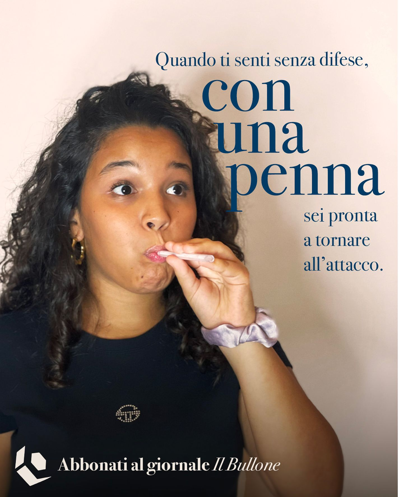
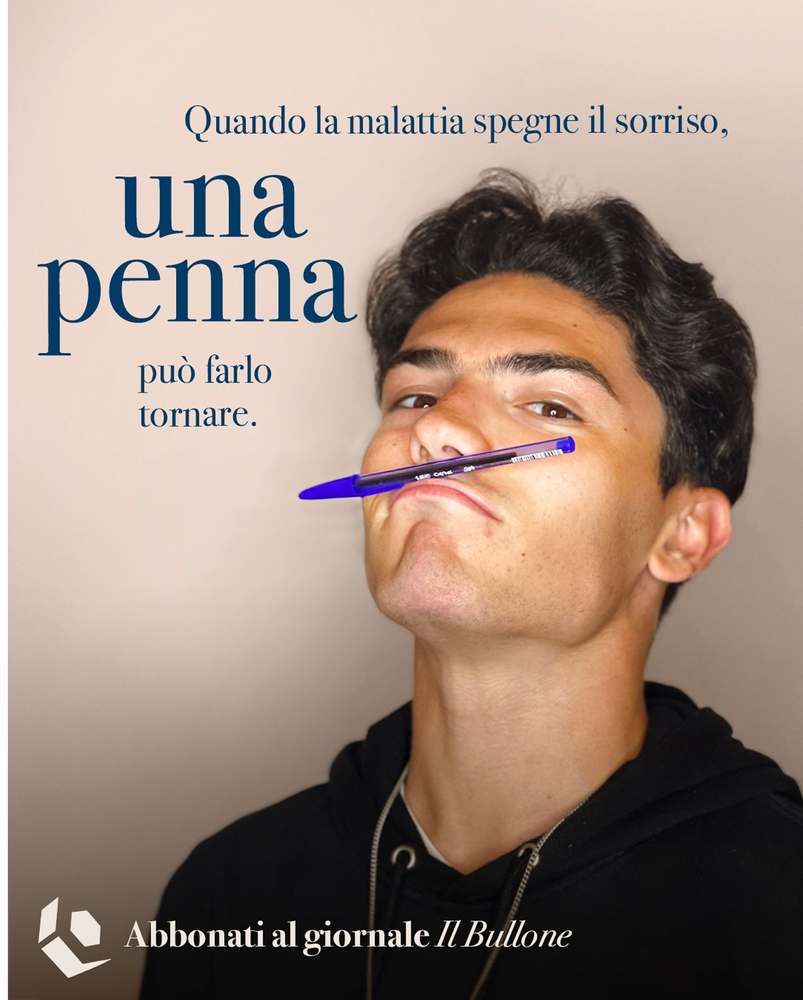
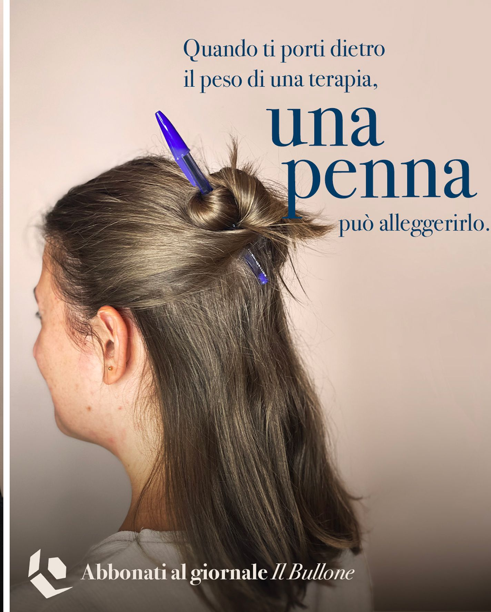
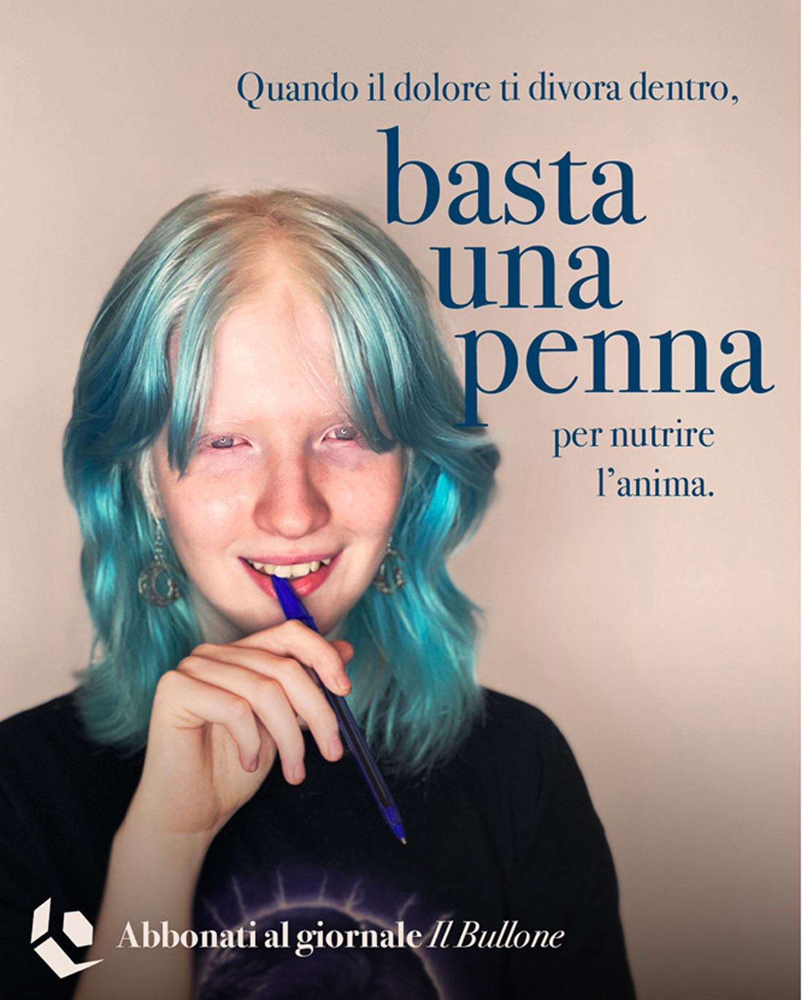
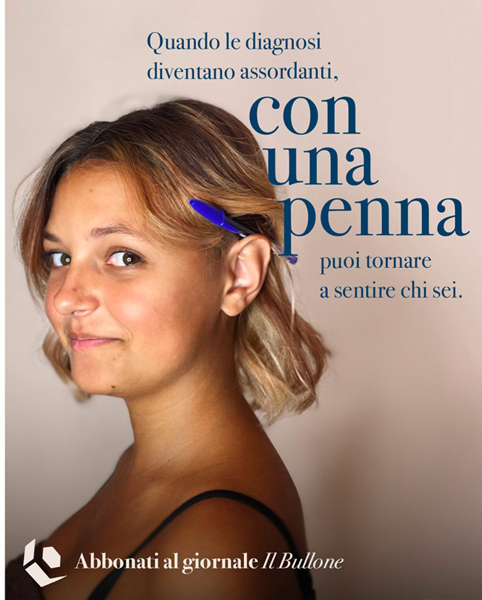
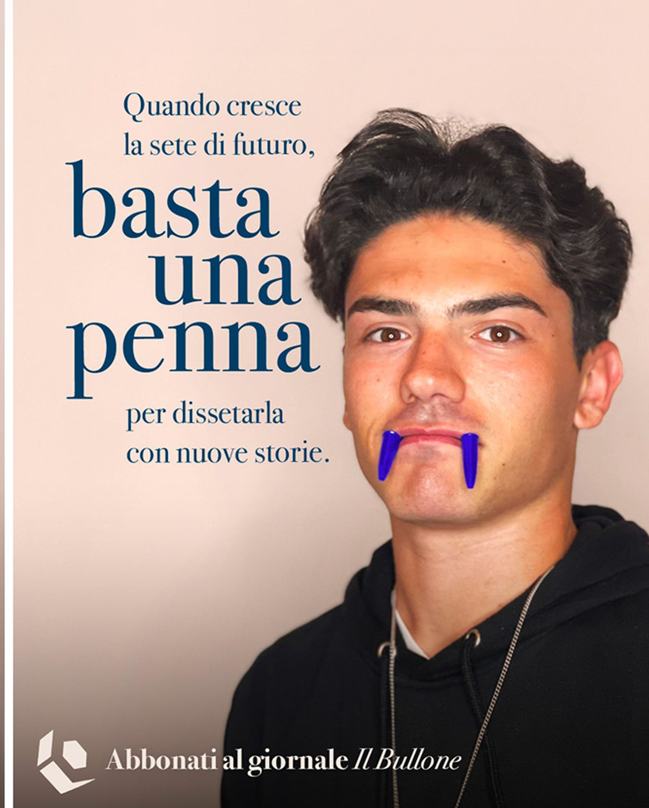

Fondazione
IL BULLONE
Collaborare con Fondazione Il Bullone è uno di questi.
Con loro abbiamo ideato e lanciato la nuova campagna digital di raccolta fondi indirizzata alla Fondazione. Un progetto che parla di rinascita, coraggio e comunicazione come strumento di cambiamento reale.



La penna come simbolo di rinascita
Per i giovani della Fondazione – i B.Livers – la scrittura è un atto catartico: raccontarsi diventa il primo passo per riconoscersi di nuovo come persone, e non solo come pazienti o ex malati.
La campagna mostra "gli effetti" che una penna può avere: alleggerire, far dimenticare la malattia e restituire la voglia di mettersi in gioco.
Protagonisti sono cinque giovani redattori del giornale Il Bullone, che con le loro parole ci invitano a un gesto concreto: abbonarsi e donare per permettere ad altri ragazzi di intraprendere lo stesso percorso.
"Abbiamo scelto di raccontare la leggerezza ritrovata", spiega Sergio Muller, Chief Communication Officer di A-Tono. "Cinque giovani e una penna, che diventa protagonista di piccoli momenti in cui si riscoprono come individui e non più solo come malati."
Una strategia digital-first per amplificare il valore
La campagna è stata pensata con un approccio digital-first, ottimizzando ogni euro investito per massimizzare impatto e conversione. La strategia media e i contenuti sono stati progettati per parlare alle persone giuste, nel modo più empatico, diretto e sostenibile possibile.
"La collaborazione con A-Tono ETS ci permette di amplificare la voce dei nostri ragazzi e il valore del nostro modello", afferma Bill Niada, fondatore e presidente di Fondazione Il Bullone. "Crediamo che questa campagna, potente nella sua autenticità e mirata nella strategia digital, ci aiuterà a raggiungere nuovi sostenitori indispensabili per garantire un futuro ai giovani che hanno affrontato esperienze di malattia grave."
Restituire valore alla società attraverso la comunicazione
Per A-Tono ETS, questo progetto è molto più di una campagna: è un modo per restituire valore alla società, mettendo creatività, competenza e tecnologia al servizio di chi costruisce futuro e speranza.
"Siamo onorati di affiancare Fondazione Il Bullone in questa sfida," racconta Anastasia Granata, presidente di A-Tono ETS. "Il Bullone non è solo un giornale, ma un vero laboratorio di rinascita. Il nostro obiettivo è stato tradurre la potenza emotiva di queste storie in una campagna digital efficace, capace di generare un impatto tangibile sulla vita dei B.Livers."


